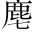

偽臨朝武氏者武則天，名曌。太宗時，召入為才人。高宗為太子，入侍，悅之。太宗崩，高宗即位，武氏為尼，引納後宮，拜為昭儀。尋廢王皇后，立武氏為皇后，政事皆決焉。高宗崩，中宗即位，武氏臨朝，廢中宗為廬陵王。，性非和順本性不良。，地實寒微出身微賤。。昔充太宗下陳下陳，下列也。謂為才人。，曾以更耕。衣入侍嘗以更衣之便得幸。。洎忌。乎晚節，穢亂春宮洎，及也。晚節，晚年也。穢亂，言其淫也。。潛隱先帝之私，陰圖後房之嬖削髮為尼，掩其為太宗才人之跡，以圖高宗後宮之嬖倖。。入門見嫉，蛾眉不肯讓人；掩袖工讒，狐媚偏能惑主入宮便懷嫉妒，而舒展蛾眉，不肯讓人。巧於用讒，王皇后為其所害，是其狐媚之才，偏能惑高宗之聽。。踐元后於翬揮。翟翬翟，雉羽也。雉之交有時，守死而不犯分，婦德所宜。故後之車服，皆畫翬翟之形。王皇后廢，武氏踐元后之位。，陷吾君於聚攸。○吾君，謂高宗也。聚，猶共也。獸之牝者曰。加以虺。《曲禮》:「夫惟禽獸無禮，故父子聚蜴。」為心，豺狼成性毀。。近狎邪僻，殘害忠良亦。；殺姊屠兄，弒君鴆虺蜴，毒蟲也。母邪僻，指李義府、許敬宗等。忠良，指褚遂良、長孫無忌等。。人神之所同嫉，天地之所不容。猶復包藏禍心，窺竊神器朕去聲。。君之愛子，幽之於別宮；賊之宗盟，委之以重任姊，韓國夫人。兄，惟良。君、母未聞。鴆，毒鳥。以其毛瀝酒，飲之則殺人。。嗚呼！霍子孟之不作，朱虛侯之已亡神器，帝位也。。鷰中宗，君之愛子，廢為廬陵王，而幽之於別所。諸武用事，悉委之以重任。○以上數武氏之罪。啄皇孫，知漢祚之將盡霍子孟，霍光也，輔幼主以存漢。朱虛侯，劉章也，誅諸呂以安劉。○二句隱然譏責朝臣。；龍漦同燕。帝后，識夏庭之遽衰漢成帝后趙飛燕，於後宮有子者皆殺之，故有「鷰啄皇孫」之謠。。
敬業皇唐舊臣，公侯冢子敬業，唐大臣徐世。奉先君之成業，荷本朝之厚恩。宋微子之興悲，良有以也之孫也。；袁君山之流涕，豈徒然哉，賜姓李。！是用氣憤風雲，志安社稷。因天下之失望，順宇內之推心，爰舉義旗，以清妖孽微子過殷故墟，悲之，作《麥秀》之歌。一雲箕子所作。。南連百越，北盡三河，鐵騎成群，玉軸相接漢袁安，以外戚專權，言及國事每喑嗚流涕。。海陵紅粟，倉儲之積靡窮以上述興師之故。；江浦黃旗，匡復之功何遠以言乎馬，則鐵騎萬千以成群。以言乎車，則玉軸遠近以相接。。班聲動而北風起，劍氣衝而南鬥平粟多。。喑兵眾。嗚班馬之聲動，而凜然若北風起。懸劍之氣衝，而煥然若南鬥平。則山嶽崩頹，叱吒蔭。則風雲變色去聲。。以此制敵，何敵不摧！以此圖功，何功不克嗏去聲。！
公等或居漢地異姓。，或葉同「協」。周親同「姓」。，或膺重寄於話言分封於外。，或受顧命於宣室受託於朝。○二句合同異姓。。言猶在耳，忠豈忘心！一抔裒。之土未乾幹。，六尺之孤何託一掬曰抔。土，指墳墓也。土未乾，謂高宗葬未久也。六尺孤，指中宗言。？倘能轉禍為福轉武氏之禍而為福。，送往事居往，謂高宗。居，謂中宗。，共立勤王之勳事居。，無廢大君之命送往。，凡諸爵賞，同指山河爵賞有功，共指山河以為信。。若其眷戀窮城，徘徊歧路謂進退不果，徘徊於兩途之間。，坐昧先幾之兆，必貽後至之誅禹致群臣於會稽，防風氏後至，禹戮之。○以上勵共事之人。。請看今日之域中，竟是誰家之天下試觀今日之域中，畢竟是誰家之天下。言將來必歸唐也。○結語陗勁。！
起寫武氏之罪不容誅，次寫起兵之事不可緩，末則示之以大義，動之以刑賞。雄文勁採，足以壯軍聲而作義勇，宜則天見檄而嘆其才也。